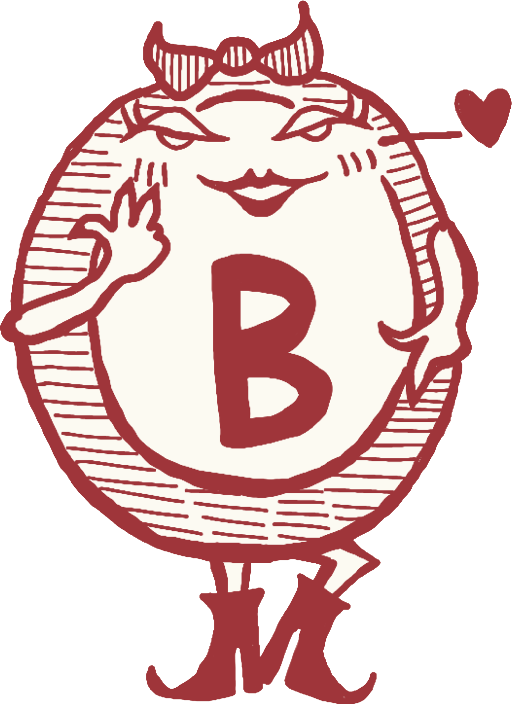

現在多くの国の経済は、基本的に自由市場の原則のもとに成り立っています。生産、売買などは人々の自由に任され、国家は市場が円滑に機能するよう、裏方として市場のルールメーカーに徹することで、市場の自由を支えている、というのが原則なわけです。
しかし、この自由市場の中で、いまだに国家が強固な支配権を保持している領域があります。それが「貨幣制度」、すなわち通貨の発行と管理です。
たとえば、円やドルといった通貨は、いずれも国家がその発行と管理を独占しています。地域通貨のようなものはあっても、それが法定通貨として認められることはありません。例えば、支払いに必ず使える（強制通用力）といった法的義務はありません。つまり、私的通貨は国家通貨と自由に競争できる地位には置かれておらず、貨幣の領域では依然として国家の優越性が制度的に保障されています。
このような状況を前に、私たちは一つの問いを立てることができます。
「貨幣に自由がない市場を、本当に自由市場と呼ぶことができるのだろうか？」
ビットコインは、この問いに対して明確に「NO」を突きつけています。すなわち、貨幣の領域においても自由があるべきだという立場をとり、その思想を体現した存在といえます。
自由市場や通貨のあり方を考えるうえで、まず貨幣とは何か、という問いに立ち返る必要があります。 一般的には、貨幣とはモノとモノの交換を仲介する手段、たとえばパンを買うときにお金を支払う、といった交換の媒体とされています。確かに、貨幣は物々交換に代わる便利なツールとして機能してきました。
しかし、現代の経済において貨幣は単なる交換の道具にとどまりません。それ以上に、貨幣は経済の共通言語であり、物事を比較・検討する物差しとしての役割を果たしています。
私たちは日々、「この指輪は 1 個 100 円」「この仕事の時給は 2000 円」「借金の金利は年利 3%」といったように、価格にまつわるさまざまな情報に接しています。これらはすべて、貨幣という共通単位によって表現されており、それによって異なるモノやサービスの価値を比較することができます。
つまり、貨幣とは市場の参加者全員が使う共通の尺度、物差しであり、それをもとに消費者は、何を、どれくらいの価格で買うか、といったことを判断したり、生産者は、どれだけのコストをかけて、何をどのように作るか、などといったことを決定していきます。経済におけるすべての意思決定が、貨幣という共通言語を通じて行われているのです。
この視点に立つと、貨幣こそが、市場における取引、情報伝達や判断などの根幹を担っていることがわかります。言い換えれば、貨幣こそが、市場という壮大な自生的秩序を成立させている最も根源的な要素なのです。
ところが、この貨幣がもしも外部の意図によって操作され、不安定なものとなったらどうなるでしょうか。たとえば、国家などが一方的に貨幣の価値を操作した場合、その共通言語としての役割が歪められてしまうでしょう。
その結果、価格という基準もまた歪み、情報シグナルも歪み、市場での比較や創意工夫、競争と協力、配分などといった本来の機能が損なわれてしまいます。つまり、市場全体が誤った基準や判断の上で動くことになり、経済そのものの健全性が損なわれてしまうのです。
このように、貨幣のあり方は、自由市場が正常に機能するための最も基礎的で重要な根幹部分だと言えるのです。
では次に、国家がどのように貨幣を操作し、市場に影響を与えているのかを具体的に見ていきます。これは今までのクイズで、ずっとみてきたことの復習でもあります
まず代表的なものが、「通貨の発行による市場の歪み」です。国家などの中央機関が通貨を新たに発行するという行為は、既存の通貨の価値を希釈（＝薄める）することにつながります。通貨の供給量が増えれば、その分お金の価値は相対的に下がり、長期的には、インフレーション（物価の上昇）につながっていきます。いままでみてきたことですね。
これは単に物価が上がるという話にとどまらず、上の文脈で言えば、通貨という物差しが、国家の判断で操作される、という言い方もできるわけです。そしてさらに問題なのは、その新しく発行された通貨を、どこに配分するかもまた、国家が決定することがあるという点です
たとえば、政府が財政政策として、特定の地域に公共事業を集中させたり、特定の業界に補助金を与えたりすることで、その領域には多くの資金、資源や人が流れ込みます。しかし、それ以外の分野には資源や人が行き渡らず、市場全体としてはバランスが崩れてしまいます。つまり、国家による通貨発行と配分によって、市場の情報が歪められてしまうのです。
また、カンティロン効果という概念があります。カンティロン効果とは、インフレ（通貨の供給拡大）が社会全体に一様な影響を及ぼすわけではなく、受け取るタイミングや立場によって経済的な有利・不利が生じる現象を指します。
例えば新たに発行された通貨はまず、民間銀行、大企業、富裕層、投資家など、金融の中心に近い人々のもとに届きます。彼らはまだ物価が上昇する前の段階で、お金を使うことができるため、実質的に安くモノやサービスを購入することができます。
一方、庶民のもとにその通貨が届くころには、すでに物価は上昇しています。結果として、彼らは同じモノをより高い価格で購入せざるを得なくなり、実質的な購買力を失ってしまうのです。
つまり、国家による通貨発行は、金融に近い場所で最初に通貨を受け取る者に利益を、後から受け取る者に不利益をもたらすわけです。これがカンティロン効果です。
これらのことは、市場の原理に反する、恣意的に作られた産業・金融構造であり、本来の自由な市場のメカニズムから逸脱しています。本来、自由市場において価格とは、市場参加者の判断や選択の積み重ねによって形成される「市場の声」であり、それに従って資源が効率的に配分されていく仕組みになっているはずですが、しかし、国家が通貨発行を操作し、その影響下で価格が形成されると、それはもはや、市場の声ではなく、「政治の声」となってしまいます。
国家による恣意的な通貨発行により、市場の自然な秩序と効率性は根本から損なわれ、経済全体が非効率な方向へと進んでしまうわけです。
次に取り上げるのは、「金利操作による市場の歪み」です。こちらは、今までの話の中では、「信用創造」の話と大きく関連します。
まず、金利とは何かですが、詳細は複雑なので、ごく簡単にざっくりと説明しましょう。
たとえば、あなたが誰かに 100 万円を貸すとします。そして「1 年後に 101 万円返してね」という約束をした場合、この上乗せされた 1 万円が利子であり、その利子の割合（この場合は 1%）が金利です。お金を借りる側にとっては、一定期間お金を使える代わりに、少し多く返す必要があるということになります。
このような金利を介した貸し借りは、現代社会では主に銀行を通じて行われています。銀行は、お金を企業などに貸し出すことで運用をしています。そして借りた企業は、その資金を使って新しいプロジェクトを立ち上げたり、設備投資を行ったりするのです。
そして、その貸し借りの際、金利は「お金の貸し手（人々）」と「借り手（企業など）」のあいだで、市場の需要と供給に基づいて自然に決定されるのが本来の姿でした。金利が高ければ、お金を借りる側は慎重になりますし、低ければ投資が活発になります。こうした市場メカニズムこそが、経済の健全な資源配分を支えています。
しかし、国家など中央の組織がこの金利を人為的に操作する場合、市場に大きな歪みが生まれます。 たとえば、本来なら年 5%の金利でなければ借りられない資金を、国家(政府・中央銀行）が政策的に金利を1%まで引き下げてしまったとしましょう。金融政策を通じて強い影響を及ぼすことで、民間の銀行の貸出金利を、実質的に低いものへと誘導するという事です。すると、多くの企業が 5%ではなく、1%程度なら安いと考え、今なら安くお金が借りられると思って、本来の経済状況では見合わないほどに、過剰に借金をしてしまうのです
その結果、短期的には企業活動や投資が急増し、経済が活性化したように見えるかもしれません。しかしそれは、本来の市場の健全なシグナルに基づかない、持続性のない成長です。
このような不自然で持続性のない投資のことを「誤投資」と呼びます。誤投資とは、本来ならば市場の需要や価格シグナルに基づいてなされるべき投資が、中央銀行による低金利といった、人為的な通貨への介入によって引き起こされた投資行動のことです。
これは本来ならできなかった、人為的に作られた活性化であり、要するにバブルです。そしてバブルは必ずはじけるものです。その結果、バブル崩壊（クレジットクランチ＝信用収縮）といったことが起こり、今度は逆に、急速な景気の後退を引き起こします。
このように、金利を人為的に操作することで発生する景気循環（景気の過熱とその後の冷え込みのサイクル）は、経済に大きな負担を与えます。
この現象は、以前触れた「信用創造」の仕組みと密接に関係しています。信用創造とは、銀行が貸し出すことで新たなお金を生み出すプロセスですが、金利はその出発点です。その金利が国家主導で恣意的に歪められれば、信用創造の流れ全体もまた、誤った方向へ過剰に進んでしまうというわけです。
このように、私たちの市場は、一見自由市場であり、国家は背後のルールメーカーのみにとどまっているように見えますが、実は、経済の最も根幹となる、貨幣の部分を管理し、通貨発行や金利操作などによってコントロールしているのです。これは、自由経済に潜むソフトな計画経済、といえるかもしれません。
では、これらの問題をどう解決したらよいでしょうか？ その一つの提案が、最初に触れた 「貨幣発行の自由化」 という考え方です。
貨幣発行の自由化とは、以下のような仕組みを指します。
つまり、貨幣の発行を国家の独占から解放し、貨幣そのものを市場競争に委ねようという発想です。私たちは今まで、当然のように、貨幣は国家が管理するものだと思っていましたが、貨幣発行でさえも、国家だけの独占ではなく、民間でも行えるようにして、貨幣自体も、自由市場の中で競争原理にかけるべきだ、ということです。
そうやって複数の貨幣が、自由市場の中で、競争にさらされることで、より最適な貨幣が残っていきます。そして市場原理によって選ばれた貨幣は、市場原理に則った貨幣となり、その結果、人為的に歪められることのない、市場の物差し、つまり市場の共通言語としての貨幣が生まれるでしょう。 というのがこの考え方の核心です。
このような「貨幣発行の自由化」の考え方を、明確に打ち出した経済学者がフリードリヒ・ハイエクです。彼は 1976 年に『貨幣発行自由化論』という著作を出し、自由市場と貨幣発行の自由化の重要性を説きました。
その中で彼は
『すべての貨幣上の悪の根源は、政府による貨幣の独占である。』
とまで主張しました。
ハイエクの名は、これまでも度々ご紹介しましたが、彼は生涯にわたり、自由の価値を説き続け、自由市場とその根本である貨幣の在り方こそが、自由な社会を支える土台であると主張しました。1974 年にはノーベル経済学賞を受賞し、20 世紀における偉大な経済思想家の一人として歴史に名を残しています。
彼はビットコインが誕生する前、1992 年に亡くなっていますが、1984 年のインタビューでは、ビットコインを連想させるような次の言葉を残しています。
『政府の手から貨幣を奪い取らない限り、私たちは二度と良質な貨幣を手にすることはできないだろう。もし暴力によって政府の手からそれを奪い取ることができなければ、私たちにできるのは、巧妙な回りくどい手段を使って、政府が止められない何かを導入することだけだ。』
『巧妙な回りくどい手段を使って、政府が止められない何かを導入』
これはまさに、ビットコインのことを表しているような言葉に感じます。もちろん、貨幣の設計、ボラティリティについてなど、ハイエクの考えとビットコインには、いろいろな違いはあります。ただ彼は、ビットコイン以前の経済思想家の中で、最もビットコインに近い存在と言えるかもしれません。
さて、実際に通貨が自由な市場に開かれ、競争にさらされたとき、具体的には、どのような性質の貨幣が生き残るのでしょうか？民間銀行の発行した貨幣なのか？大企業の発行した貨幣なのか？発行主体のいない貨幣なのか？結局、政府が発行した通貨なのか？性質としても、物価に連動した変動が少ない貨幣なのか？恣意的な操作ができない希少性の高い貨幣なのか？両方が必要なのか？それはまだわかりません。
次回は、そういった選ばれうる貨幣、より優れた性質を持つ貨幣として、「サウンドマネー（健全な貨幣）」という考え方を紹介します。この、サウンドマネーの候補として浮かび上がってくるのが、ビットコイン、というより、そういったサウンドマネーの性質をもつように設計されたものが、ビットコインであるというのが、次回のテーマとなります。
いよいよ、大詰めになってきました。引き続き、お楽しみに！